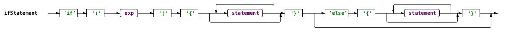
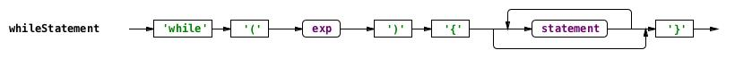
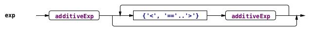

| Home |
| Syllabus |
| Schedule |
| Projects |
| Tests |
| Resources |
| Piazza |
| Submit Server |
| Grades Server |
CMSC 330, Fall 2016
Organization of Programming Languages
Project 4 Part A - Small C Parser
Introduction
In this project, you will write a parser for SmallC, a tiny subset of the C programming language. As part of the project, you will write a parser that translates a plain text C program into an abstract syntax tree (AST), and a pretty print function that formats the code in a specific style. If you want to leran C, you can revisit the textbook from CMSC216.
For purposes of this project, we will only test your parser with valid input. Thus your code may do whatever you want on a bad input. We do, however, recommend adding reasonable error handling code to your project for cases of malformed or otherwise incorrect C input, because it will make developing your project easier. As you are testing your program, you may inadvertently create incorrect input data; substantial time may be lost in trying to debug the program, only to find a few mistyped characters in your input data are the source of the problem.
In Project 4 Part B, you will write an interpreter for SmallC. The interpreter executes the code represented as an AST, which is generated by the parser in this project. Imperative programming is not allowed. You can use semicolon seperated print statements. If you do not finish this project, you will not be able to do Project 4 Part B.
If you find any error in the description or in the test files, report it to the instructor. Make sure you check the piazza announcements and errata section of the project periodically.
Getting Started
Download the following archive file p4a.zip and extract its contents.Along with files used to make direct submissions to the submit server (submit.jar, .submit, submit.rb), you will find the following project files:
- Public test input files
- Expected outputs for parser tests
- public_parse_assign-exp.out
- public_parse_assign1.out
- public_parse_define1.out
- public_parse_equal.out
- public_parse_exp1.out
- public_parse_exp2.out
- public_parse_greater.out
- public_parse_if-else-while.out
- public_parse_if.out
- public_parse_ifelse.out
- public_parse_less.out
- public_parse_main.out
- public_parse_nested-if.out
- public_parse_nested-ifelse.out
- public_parse_nested-while.out
- public_parse_print.out
- public_parse_test1.out
- public_parse_test2.out
- public_parse_test3.out
- public_parse_test4.out
- public_parse_while.out
- public_parse_test-assoc1.out
- Expected outputs for pretty print tests
- public_prettyprint_assign-exp.out
- public_prettyprint_assign1.out
- public_prettyprint_define1.out
- public_prettyprint_equal.out
- public_prettyprint_exp1.out
- public_prettyprint_exp2.out
- public_prettyprint_greater.out
- public_prettyprint_if-else-while.out
- public_prettyprint_if.out
- public_prettyprint_ifelse.out
- public_prettyprint_less.out
- public_prettyprint_main.out
- public_prettyprint_nested-if.out
- public_prettyprint_nested-ifelse.out
- public_prettyprint_nested-while.out
- public_prettyprint_print.out
- public_prettyprint_test1.out
- public_prettyprint_test2.out
- public_prettyprint_test3.out
- public_prettyprint_test4.out
- public_prettyprint_while.out
- public_prettyprint_test-assoc1.out
- Utility Code
- smallc.ml -your parser and pretty print code
- parser.ml - uses your parser to parse smallC program. ( ocaml parser.ml main.c )
- prettyprint.ml - uses your print print to print smallC code (ocaml prettyprint.ml test1.c )
- Test Script - test_all.rb
- Testing instructions:
README
Part 1: Parsing SmallC
Put your solution to this part in the to do section of file smallc.ml.
Your next task is to write a parser for C program, which in this case will be a function that turns a string into a C abstract syntax tree (AST). Your parser will take as input a sequence of tokens, produced by a scanner, which are the terminals of the C grammar, and output the C AST.
We've supplied you with a function tokenize : string -> token list that acts as a scanner/lexer, converting the string input into a list of tokens, represented by the following data type:
type token =
| Tok_Id of string
| Tok_Num of int
| Tok_String of string
| Tok_Assign
| Tok_Greater
| Tok_Less
| Tok_Equal
| Tok_LParen
| Tok_RParen
| Tok_Semi
| Tok_Main
| Tok_LBrace
| Tok_RBrace
| Tok_Int
| Tok_Sum
| Tok_Mult
| Tok_Pow
| Tok_Print
| Tok_If
| Tok_Else
| Tok_While
| Tok_END
For example,
int main(){
int a;
a = 10;
int b;
b = 1;
int c;
c = a + b;
printf(c);
}
becomes a string "int main(){int a; a= 10; int b; b = 1; int c; c = a+b; printf(c);}".
when called as
tokenize "int main(){int a; a= 10; int b; b = 1; int c; c = a+b; printf(c);}",
the return value is
[Tok_Int; Tok_Main; Tok_LParen; Tok_RParen; Tok_LBrace; Tok_Int;Tok_Id "a"; Tok_Semi; Tok_Id "a"; Tok_Assign; Tok_Num 10; Tok_Semi;
Tok_Int; Tok_Id "b"; Tok_Semi; Tok_Id "b"; Tok_Assign; Tok_Num 1;
Tok_Semi; Tok_Int; Tok_Id "c"; Tok_Semi; Tok_Id "c"; Tok_Assign;
Tok_Id "a"; Tok_Sum; Tok_Id "b"; Tok_Semi; Tok_Print; Tok_LParen;
Tok_Id "c"; Tok_RParen; Tok_Semi; Tok_RBrace; Tok_END]
What to do: You write a function parse_Function : token list -> ast * token list that takes a list of tokens as input (returned from tokenize) and returns an AST. Once you have done this, you can run it using the code in the file parser.ml. You are not allowed to use parser generator tools.
You should use the idea of a recursive descent parser, as we discussed in class. Thus we suggest you write a function: parse_Function, which parses the non-terminal Function representing a single C function. parse_Function calls other fucntions such as parse_methodBody, parse_Statement to parse the body of the function. The context free grammar for smallC is given next, followed by the OCaml type definition ast of SmallC abstract syntax trees.
SmallC Grammar
The grammar for C you need to support is as follows
basicType-> 'int'
mainMethod-> basicType 'main' '(' ')' '{' methodBody '}'
methodBody->(localDeclaration | statement)*
localDeclaration->basicType ID ';'
statement->
whileStatement
|ifStatement
|assignStatement
|printStatement
assignStatement->ID '=' exp ';'
ifStatement -> 'if' '(' exp ')' '{' ( statement)* '}' ( 'else' '{'( statement)* '}')?
whileStatement -> 'while''(' exp ')' '{'(statement )*'}'
printStatement->'printf' '(' exp ')' ';'
exp -> additiveExp (('>' | '<' | '==' ) additiveExp )*
additiveExp -> multiplicativeExp ('+' multiplicativeExp)*
multiplicativeExp-> powerExp ( '*' powerExp )*
powerExp->primaryExp ( '^' primaryExp) *
primaryExp->'(' exp ')' | ID | INITLIT
ID->( 'a'..'z' | 'A'..'Z') ( 'a'..'z' | 'A'..'Z' | '0'..'9')*
INTLIT-> ('0' | ('1'..'9') ('0'..'9')* )
WS-> (' '|'\r'|'\t'|'\n')
where
- basicType is the basic data type in SmallC. That means SmallC only supports one data type, int. SmallC does not suppoer pointers, arrays, or strings.
- mainMethod is the main function in SmallC. SmallC has only one function called "main". Function "main" returns "int" and takes no arguments. Because SmallC does not support return statement, "main" does not return any value. SmallC does not support preprocessing directive ‘#include’, #define, or global variables. All variables are declared locally inside the main function. SmallC programs always start with "int main(){..."
- methodBody is the body of the main function. It includes zero or more local variable declarations and statements.
- localDeclaration declares the identifiers (variables). All variables are int type. Variables must be declared before they can be used and same variable cannot be declared twice. SmallC interpreter throws exception either violation. Checking if a variable has been declared is for Part B of the project. Ignore it in Part A.
- statement produces all available statements in SmallC. SmallC only has assignment statement, if statement, and while statement.
- assignStatement assigns the value of the right hand side expression to the left hand side identifier. All expressions have the same data type int.
- ifStatement is the only brach statement SmallC supports. "Else" branch is optional. The conditional expression return 1 for true, and -1 for false. SmallC supports nested if/else statements.

- whileStatement is the repetition statement in SmallC. The conditional expression return 1 for true, and -1 for false. While statement body has 0 or more statements. SmallC supports nested while statements.

- printStatement is the statement to print the value of an expression. "printf("%d\n", exp)" is equivalent to "printf(exp)" in SmallC.
- exp is the expression in SmallC. SmallC expressions can only have +,*, ^ (power), parenthesis "()" operations, and logical operations Greater ">", Less "<", and Equal "==". (Clarification: in C, "^" is xor, not power operator. We use "^" as power in SmallC). The order of precedence from high to low is (), ^, *, +. Logical operations all have same precedence. For example: a=10; b=2; a+b*3^3 evalues to 64. Operators +,*, ^,>,<,== are all right associative. For example: "2 + 3 + 4" is parsed as "Sum(Num 2,Sum(Num 3,Num 4))", and "5 > 6>1" is parsed as "Greater(Num 5,Greater(Num 6,Num 1))".

- additiveExp, multiplicativeExp, powerExp, primaryExp represent the precedence of +,*,^ from low to high.
- ID is the identifier. Identifiers may contain upper- and lower-case letters, digits, but starts with a letter.
- INITLIT is the integer number literals.
- Ws is the white space.
SmallC AST
For this project, a SmallC is represented using an AST (abstract syntax tree) defined using the following OCaml data type:
type ast =
| Id of string (*ID "a" *)
| Num of int (* NUm 10 *)
| Define of data_type * ast (* data type * ID *)
| Assign of ast * ast (* ID * expression *)
| List of ast list
| Fun of data_type * string * ast * ast (* return type * function name * argument list * statement list *)
| Sum of ast * ast (* exp * exp *)
| Greater of ast * ast (* exp * exp *)
| Equal of ast * ast (* exp * exp *)
| Less of ast * ast (* exp * exp *)
| Mult of ast * ast (* exp * exp *)
| Pow of ast * ast (* exp * exp *)
| Print of ast (* print (expression ) *)
| If of ast * ast * ast (* cond * if brach * else branch *)
| While of ast * ast (* cond * while body *) | Paren of ast
Part 2: SmallC Pretty Print
In this section, you will impelment pretty_print, a function that prints the SmallC source code in indented format. Pretty print uses following style:
int
main(){int x;int y;
while(x == y) {x=x+1;
a = 100;}
if(a == b){
printf(20);
}else{
printf(10);
}
}
pretty print output of above code is:
int main(){
____int x;
____int y;
____while(x == y){
________x = x + 1;
________a = 100;
____}
____if(a == b){
________printf(20);
____}else{
________printf(10);
____}
} [print a single "\n" here.]
Testing and Submission
We will test your project by calling your parsing and evaluation functions directly, so be sure to give those functions the types we expect, as given above. You can work on the interpreter and parser in any order, we will test each part independently.You may assume that all input test cases are syntactically correct. If the input SmallC code is not legal you may perform any action (e.g., exit, throw an exception).
All your code should be in one fils, smallc.ml. You can submit your project in two ways:
-
Submit your smallc.ml files directly to the
submit server.
-
You can submit multiple files by putting the files in a .zip archive first.
On Windows you can select the two files, then right click to
select the "Send to->Compressed (zipped) Folder" option
to create a .zip archive.
Once your files are in a single zip archive,
bring up the upload dialog box by clicking on the
submit link in the column "web submission".
Select your archive file using the "Browse" button,
then press the "Submit project!" button.
- The submit server now allows multiple files (from the same directory) to be selected. Bring up the upload dialog box by clicking on the submit link in the column "web submission". Browse to the directory containing your project files, then click on both SmallCTest.txt and SmallC.ml. Now press the "Submit project!" button.

-
You can submit multiple files by putting the files in a .zip archive first.
On Windows you can select the two files, then right click to
select the "Send to->Compressed (zipped) Folder" option
to create a .zip archive.
Once your files are in a single zip archive,
bring up the upload dialog box by clicking on the
submit link in the column "web submission".
Select your archive file using the "Browse" button,
then press the "Submit project!" button.
-
You may also submit directly by executing a Java program on a computer
with Java and network access. Use the submit.jar file
from the archive p4a.zip,
To submit, go to the directory containing your project, then either
execute submit.rb by typing:
ruby submit.rb or use the java jar directly using the following command:
java -jar submit.jar You will be asked to enter your class account and password, then all files in the directory (and its subdirectories) will be put in a jar file and submitted to the submit server. If your submission is successful you will see the message:
Successful submission # received for project 4
Academic Integrity
The Campus Senate has adopted a policy asking students to include the following statement on each assignment in every course: "I pledge on my honor that I have not given or received any unauthorized assistance on this assignment." Consequently your program is requested to contain this pledge in a comment near the top.
Please carefully read the academic honesty section of the course syllabus. Any evidence of impermissible cooperation on projects, use of disallowed materials or resources, or unauthorized use of computer accounts, will be submitted to the Student Honor Council, which could result in an XF for the course, or suspension or expulsion from the University. Be sure you understand what you are and what you are not permitted to do in regards to academic integrity when it comes to project assignments. These policies apply to all students, and the Student Honor Council does not consider lack of knowledge of the policies to be a defense for violating them. Full information is found in the course syllabus---please review it at this time.
Copyright Notice
This course project is copyright of Dr. Anwar Mamat. ©Anwar Mamat [2016]. All rights reserved. Any redistribution or reproduction of part or all of the contents in any form is prohibited without the express consent of the author.